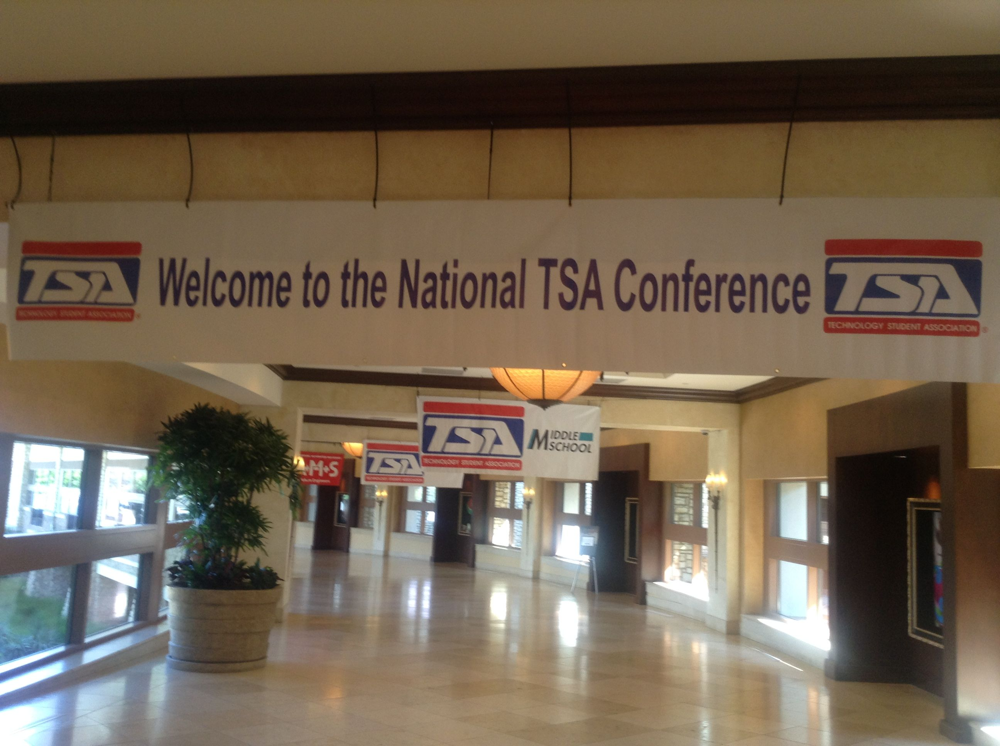

Utah TSA Nationals 2015
Fall Leadership
Fundraiser
At the Fall Leadership conference, we will be hosting a state fundraiser for the American Cancer Society. We will be selling raffle tickets to pie a state officer for a dollar each. Make sure to tell your friends to bring some money!
What Fall Leadership Is All About
Fall Leadership is a great time to come as a chapter team and learn what it means to be an officer in TSA, and even what TSA is for those who might have joined for the first time this year. In the morning, you will be taught in small workshops about leadership and TSA. It is a great time to learn some great things to put into practice at you chapter. In the afternoon, the State Officers will give a presentation to their respective office (presidents go to State President, etc.), to learn what your roles are in your specific office. After that, you will have an opportunity to work with your chapter officer team to complete a leadership activity. Overall, it is tons of fun and a great learning experience. We are excited to see you there!!!
Verizon App Challenge
TSA is running the Verizon Innovative App Challenge for the fourth year in a row. Middle school and high school teams have the chance to win mobile devices, $20,000 for their schools, and the opportunity to be recognized at the 2016 national TSA conference in Nashville, TN. For more information or if you want to register click here.
Nationals
Winners
We would like to congratulate everyone involved in the success of Utah as a state at the 2015 TSA National Conference. Following are the students, teams, and schools that placed top 10 in their competition.
High School
- Computer Numerical Control (CNC) Production
- 2nd Josh Degering and Steel Gardner, Mountain View High School
- Engineering Design
- 3rd Jarrett Anderson, Chris Donaldson and Nathan Flint, Layton High School
- Essays on Technology
- 9th Rebekah Reno, Freedom Preparatory Academy
- Fashion Design
- 4th Team 2, Intech Collegiate High School
- 10th Team 1, Intech Collegiate High School
- On Demand Video
- 8th David Chamberlain, Nicholas Cockrell and David Skorut, Hillcrest High School
- Technology Problem Solving
- 5th Jason Eisert and Rachael Kooyman, Lehi High School
- Transportation Modeling
- 7th Dallin Pingree, Freemont High School
- VEX Robotics — Combined Skills (Programming and Driver)
- 1st Cooper Gray and Adam Johnson (2131D), Davis High School
- VEX Robotics — Robot Skills
- 1st Cooper Gray and Adam Johnson (2131D), Davis High School
- VEX Robotics — Programming Skills
- 3rd Cooper Gray and Adam Johnson (2131D), Davis High School
- VEX Robotics — Head-to-Head Tournament Champion
- 1st Cooper Gray and Adam Johnson (2131D), Davis High School
- VEX Robotics — Excellence Award
- Cooper Gray and Adam Johnson (2131D), Davis High School
Middle School
- Challenging Technology Issues
- 5th Nichole Jeong and Shalini Kasera, Wasatch Junior High School
- Community Service Video
- 9th Preston Bone, Nichole Jeong, Shalini Kasera and Alyssa Fu, Wasatch Junior High School
- Energy Sources
- 7th Preston Bone, and Siddhant Devaru, Wasatch Junior High School
- STEM Animation
- 6th Graham Colgan, Wasatch Junior High School
- System Control Technology
- 1st Jay Clift, Oak Canyon Junior High School
- Website Design
- 7th Nichole Jeong, Shalini Kasera and Alyssa Fu, Wasatch Junior High
Thank You, Everyone
Thank you to all students, teachers, parents, advisors, and more that helped. Our success at nationals would not have been possible without your hard work and dedication.